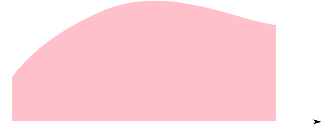

この会の企画・会場設備の提供をして頂きました
㈱ ワークスアプリケーションズ様
にこの場をお借りして御礼申し上げます。
関数\(y = f(x)\)に対して,変数\(x,y\),導関数\(y',y'',\cdots\)からなる方程式を微分方程式と言います。多変数の場合は偏微分方程式となります。
例えば \[ \frac{\mathrm{d}y}{\mathrm{d}x} = -2y \] であるとか \[ \frac{\partial u}{\partial t}=k\frac{\partial^2 u}{\partial t^2} \] などが微分方程式・偏微分方程式の例となります。
一般に微分方程式の解は任意定数を含みます。
例えば \[ \frac{\mathrm{d}y}{\mathrm{d}x}=-2y \qquad\cdots(1)\] という微分方程式の解は\(y=\color{yellow}{C}\exp(-2x)\quad\text{($C$は定数)}\)と表される関数全てが解となります(後述)。
ここでは,微分方程式の解のうち与えられた条件(初期条件・境界条件)を満たす解を近似的に求める手法を紹介します。 下図の様に独立変数を離散化して,与えられた初期値から出発して次々に関数の値を求めていく事になります。
以後,図のように変数\(x\)の刻み\(\Delta x\)を定数にした場合を考えます。精度や計算速度を改善する為に\(\Delta x\)を可変にする手法もありますが、この勉強会では扱いません。
まず一変数関数の微分方程式(常微分方程式)のうち,一階導関数のみを含む \[ \frac{\mathrm{d} f}{\mathrm{d} x} = g(x,f) \] という形の微分方程式について考えます。
\[ \frac{\mathrm{d} f}{\mathrm{d} x} = g(x,f) \] の左辺を前進差分法で近似し,右辺に\(x=x_i\)時点の値を使うと \[ \frac{f_{i+1}-f_i}{\Delta x}\approx g(x_i,f_i) \] と近似出来ます。これを変形した \[ \color{yellow}{f_{i+1} = f_i + g(x_i,f_i)\Delta x}\] という漸化式で次の点の値を計算する方法を陽的オイラー法と言います。
\[ \frac{\mathrm{d} f}{\mathrm{d} x} = g(x,f) \] の左辺を前進差分法で近似し,右辺に\(x=x_{i+1}\)時点の値を使うと \[ \frac{f_{i+1}-f_i}{\Delta x}\approx g(x_{i+1},f_{i+1}) \] と近似出来ます。これを変形した \[ \color{yellow}{f_{i+1} = f_i + g(x_{i+1},f_{i+1})\Delta x}\] という漸化式で次の点の値を計算する方法を陰的オイラー法と言います。
陰的解法では,右辺に\(f_{i+1}\)が含まれる為そのままの形では使えません。\(f_{i+1}\)について解くか,方程式の数値解法を利用する事になります。
【陽的オイラー法】
漸化式は
\[ \frac{x_{i+1}-x_i}{\Delta t} = x_i\ \Leftrightarrow x_{i+1} = (1+\Delta t) x_i \]
となります。
>>> x = 1 # x(0) = 1
>>> dt = 0.1
>>> for i in range(10):
... t = i*dt
... print "{0} {1}".format(t, x)
... x = (1 + dt) * x
...
0.0 1
0.1 1.1
0.2 1.21
0.3 1.331
0.4 1.4641
0.5 1.61051
0.6 1.771561
0.7 1.9487171
0.8 2.14358881
0.9 2.357947691
【陰的オイラー法】
漸化式は
\[ \frac{x_{i+1}-x_i}{\Delta t} = x_{i+1}\ \Leftrightarrow x_{i+1} = \frac{x_i}{1-\Delta t} \]
となります。
>>> x = 1 # x(0) = 1
>>> dt = 0.1
>>> for i in range(10):
... t = i*dt
... print "{0} {1}".format(t, x)
... x = x/(1-dt)
...
0.0 1
0.1 1.11111111111
0.2 1.23456790123
0.3 1.37174211248
0.4 1.52415790276
0.5 1.69350878084
0.6 1.88167642316
0.7 2.09075158129
0.8 2.32305731254
0.9 2.58117479171
ところで厳密解は\(x = \exp t\)となります(代入して確かめて下さい)。
それぞれの解をプロットしてみると下のようになります。このように陽的解法は厳密解のカーブの外側に,陰的解法は内側にずれていく傾向があります。
陽的オイラー法 \[ f_{i+1} \approx f_i + g(x_i,f_i)\Delta x\] の左辺を\(x_i\)の周りにテイラー展開すると \[ \begin{aligned} f_{i+1} &= f_i + \frac{\mathrm{d} f}{\mathrm{d} x}(x_i)\Delta x + \mathcal{O}(\Delta x^2) \\ &= f_i + g(x_i, f_i)\Delta x + \mathcal{O}(\Delta x^2) \end{aligned} \] となるので,この近似は\(\mathcal{O}(\Delta x)\)の項まで一致しています。このことを陽的オイラー法の精度は1次であると言います。
陰的オイラー法の精度も同様に1次(練習問題)となります。
微分方程式 \[ \frac{\mathrm{d} f}{\mathrm{d} x} = g(x,f) \] の各点\(x_i\)における値を \[ f_{i+1} = f_i + g(x_i,f_i)\Delta x\] によって求める方法を陽的オイラー法
\[ f_{i+1} = f_i + g(x_{i+1},f_{i+1})\Delta x\] によって求める方法を陰的オイラー法 という。
いずれも精度は1次である。
今度は陽的オイラー法と陰的オイラー法の更新式の平均をとって \[ f_{i+1} = f_i + \frac{g(x_i, f_i) + g(x_{i+1},f_{i+1})}{2}\Delta x\] としてみます。
しかし,右辺にある\(f_{i+1}\)はやはり面倒なので,陽的オイラー法 \[ f_{i+1} \approx f_i + g(x_i, f_i)\Delta x \] で得られる近似値を代わりに使えば, \[ f_{i+1} = f_i + \frac{g(x_i, f_i) + g(x_i + \Delta x, f_i + g(x_i, f_i)\Delta x)}{2}\Delta x \] つまり \[ \color{yellow}{\left\{\begin{array}{l} k_1 = g(x_i, f_i) \\ k_2 = g(x_i + \Delta x, f_i + k_1\Delta x) \\ f_{i+1} = f_i + \frac{k_1 + k_2}{2}\Delta x \end{array}\right.} \] という漸化式を得る事ができます。
合成微分則より \[ \frac{\mathrm{d}^2 f}{\mathrm{d} x^2} = \frac{\mathrm{d} g}{\mathrm{d} x} = \frac{\partial g}{\partial x} + \frac{\partial g}{\partial f}\frac{\mathrm{d} f}{\mathrm{d} x} \] であったので,\(g\)のテイラー展開を行うと \[ \begin{aligned} g(x_i + \Delta x, f_i + k_1\Delta x) &= g(x_i, f_i) + \frac{\partial g}{\partial x}(x_i, f_i)\Delta x + \frac{\partial g}{\partial f}(x_i, f_i)k_1\Delta x + \mathcal{O}(\Delta x^2)\\ &= \frac{\mathrm{d} f}{\mathrm{d} x}(x_i, f_i) + \frac{\mathrm{d}^2 f}{\mathrm{d} x^2}(x_i, f_i)\Delta x + \mathcal{O}(\Delta x^2) \end{aligned} \] となります。従って,改良オイラー法の右辺は \[ f_i + \frac{\mathrm{d} f}{\mathrm{d} x}(x_i, f_i)\Delta x + \frac{1}{2}\frac{\mathrm{d}^2 f}{\mathrm{d} x^2}(x_i, f_i)\Delta x^2 + \mathcal{O}(\Delta x^3) \] となります。
これは左辺のテイラー展開の\(\mathcal{O}(\Delta x^2)\)の項まで一致しているので二次の精度となります。
微分方程式 \[ \frac{\mathrm{d} f}{\mathrm{d} x} = g(x,f) \] の各点\(x_i\)における値を \[ \left\{\begin{array}{l} k_1 = g(x_i, f_i) \\ k_2 = g(x_i + \Delta x, f_i + k_1\Delta x) \\ f_{i+1} = f_i + \frac{k_1 + k_2}{2}\Delta x \end{array}\right. \] によって求める方法を改良オイラー法という。
精度は2次である。
>>> def g(t, x):
... return x
...
>>> x = 1
>>> dt = 0.1
>>> for i in range(10):
... t = i*dt
... print "{0} {1}".format(t, x)
... k1 = g(t, x)
... k2 = g(t + dt, x + k1*dt)
... x += (k1 + k2)*dt/2
...
0.0 1
0.1 1.105
0.2 1.221025
0.3 1.349232625
0.4 1.49090205062
0.5 1.64744676594
0.6 1.82042867636
0.7 2.01157368738
0.8 2.22278892456
0.9 2.45618176164
先ほどのグラフに改良オイラー法の結果を重ねると下のようになります。
改良オイラー法を一般化して \[ \begin{aligned} k_1 &= g(x_i, f_i) \\ k_2 &= g(x_i + \alpha_2 \Delta x, f_i + \beta_{21}k_1\Delta x) \\ k_3 &= g(x_i + \alpha_3 \Delta x, f_i + \beta_{31}k_1\Delta x + \beta_{32}k_2\Delta x) \\ &\vdots \\ k_s &= g(x_i + \alpha_s \Delta x, f_i + \beta_{s1}k_1\Delta x + \beta_{s2}k_2\Delta x+\cdots+\beta_{s,s-1}k_{s-1}\Delta x) \\ f_{i+1} &= f_i + (\gamma_1k_1 + \gamma_2k_2 + \cdots + \gamma_sk_s)\Delta x \end{aligned} \] という形の更新式を考える事が出来ます。係数\(\alpha,\beta,\gamma\)はテイラー展開の項が一致するように決定していきます。
これはルンゲ=クッタ法と呼ばれます。
ルンゲ=クッタ法には陰的な物も含め様々な手法が存在しますが,ここでは代表的な公式を一つ紹介します。
微分方程式 \[ \frac{\mathrm{d} f}{\mathrm{d} x} = g(x,f) \] の各点\(x_i\)における値を \[ \left\{\begin{array}{l} k_1 = g(x_i, f_i) \\ k_2 = g(x_i + \frac{1}{2}\Delta x, f_i + \frac{1}{2}k_1\Delta x) \\ k_3 = g(x_i + \frac{1}{2}\Delta x, f_i + \frac{1}{2}k_2\Delta x) \\ k_4 = g(x_i + \Delta x, f_i + k_3\Delta x) \\ f_{i+1} = f_i + \frac{k_1 + 2k_2+2k_3+k_4}{6}\Delta x \end{array}\right. \] によって求める方法を古典的ルンゲクッタ法という。
精度は4次である。
def g(t, x):
return x*(1-x)
x = 0.01 # x(0) = 0.01
dt = 0.5
for i in xrange(20):
t = dt*i
print "{0} {1}".format(t, x)
k1 = g(t, x)
k2 = g(t + dt/2, x + k1*dt/2)
k3 = g(t + dt/2, x + k2*dt/2)
k4 = g(t + dt, x + k3*dt)
x += (k1 + 2*k2 + 2*k3 + k4)*dt/6
厳密解は\( x = \frac{1}{1+99\exp(-t)} \)となります。
これまで述べた以外にも様々な発想に基づく解法が存在しますが、時間の関係上割愛します。是非調べてみて下さい。
\[ \color{yellow}{\begin{aligned} \frac{\mathrm{d} u}{\mathrm{d} x} &= f(x, u, v) \\ \frac{\mathrm{d} v}{\mathrm{d} x} &= g(x, u, v) \\ \end{aligned}} \] の様な連立一階常微分方程式も同様に解くことが出来ます。例えば,陽的オイラー法であれば \[ \begin{aligned} u_{i+1} = u_i + f(x_i, u_i, v_i)\Delta x \\ v_{i+1} = v_i + g(x_i, u_i, v_i)\Delta x \\ \end{aligned} \] の様にそれぞれ更新すれば良いです。
二階以上の導関数を含む常微分方程式 \[ \color{yellow}{f(x, \frac{\mathrm{d}f}{\mathrm{d}x}, \frac{\mathrm{d}^2f}{\mathrm{d}x^2},\cdots, \frac{\mathrm{d}^mf}{\mathrm{d}x^m})=0} \] は, \[ u_1 = \frac{\mathrm{d} f}{\mathrm{d} x}, u_2 = \frac{\mathrm{d} u_1}{\mathrm{d} x}, \cdots u_m = \frac{\mathrm{d} u_{m-1}}{\mathrm{d} x}, \] と各導関数に変数を割り当てれば,連立一階微分方程式とする事が出来ます。
\[ v = \frac{\mathrm{d} x}{\mathrm{d} t} \] とおけばこの方程式は \[ \left\{\begin{array}{l} \frac{\mathrm{d} x}{\mathrm{d} t} = v \\ \frac{\mathrm{d} v}{\mathrm{d} t} = -\frac{k}{m}x \end{array}\right. \] という連立微分方程式となります。
ベクトルを利用すれば \[ \frac{\mathrm{d}}{\mathrm{d} t} \left( \begin{array}{c} x \\ v \end{array}\right) = \left( \begin{array}{c} v \\ -\frac{k}{m}x \end{array}\right) \] と記述出来ます。
ルンゲクッタ法でのコーディング例です。関数gで毎回ベクトルを生成するのは非効率ですが,読みやすさを優先します。
import numpy as np
k = 1.0
m = 1.0
def g(t, x):
return np.array([x[1], -k/m*x[0]])
x = np.array([1.0, 0.0]) # 初期条件 x(0) = 1, v(0) = 0
dt = 0.1
for i in range(100):
t = i*dt
print "{0} {1}".format(t, x[0])
k1 = g(t, x)
k2 = g(t + dt/2, x + k1*dt/2)
k3 = g(t + dt/2, x + k2*dt/2)
k4 = g(t + dt, x + k3*dt)
x += (k1 + 2*k2 + 2*k3 + k4)*dt/6
計算結果です。\(\Delta t\)を変えたり,初期条件を変えたり,他の解法を試したりいろいろ遊んでみて下さい。
【練習問題】
先ほどの方程式に抵抗と外部からの強制振動を加えた以下の方程式を解いて下さい。
\[ m\frac{\mathrm{d}^2 x}{\mathrm{d} t^2} = -kx -\mu\frac{\mathrm{d}x}{\mathrm{d} t}+A\sin(Bt)\]
パラメータは適当に\(m = 1, k = 1, \mu = 0.2, A=0.5\)などとして,
\(B\)の値をいろいろ変えて実験してみて下さい。共振現象が観測出来るはずです。
\[ \frac{\partial u}{\partial t}=k\frac{\partial^2 u}{\partial x^2} \] といった偏微分方程式も同様に差分化を行って解くのですが,解が\(\pm\infty\)に発散してしまわない為の条件の解析などが難しくなります。(フーリエ展開・超関数などの知識が必要)
今回は是非知っておいて欲しい偏微分方程式を1つだけ紹介します。
確率\(\frac{1}{2}\)で数直線上を左右に移動する点を考えましょう。これを一次元ランダム・ウォークと言います。
時刻\(t\)に数直線上の\(x\)の位置に点がある確率を \[ p(x, t) \] とします。点は時刻\(\Delta t\)毎に距離\(\Delta x\)移動するとすれば \[ \color{yellow}{p(x, t + \Delta t) = \frac{1}{2}p(x-\Delta x, t) + \frac{1}{2}p(x+\Delta x, t)} \] という漸化式が成り立ちます。
ここで \[ \begin{aligned} p(x,t+\Delta t) &= p(x,t) + \frac{\partial p}{\partial t}\Delta t + \mathcal{O}(\Delta t^2) \\ p(x+\Delta x, t) &= p(x,t) + \frac{\partial p}{\partial x}\Delta x + \frac{1}{2}\frac{\partial^2 p}{\partial x^2}\Delta x^2 + \mathcal{O}(\Delta x^3) \\ p(x-\Delta x, t) &= p(x,t) - \frac{\partial p}{\partial x}\Delta x + \frac{1}{2}\frac{\partial^2 p}{\partial x^2}\Delta x^2 + \mathcal{O}(\Delta x^3) \\ \end{aligned} \] と展開出来るので,先ほどの漸化式は \[ \frac{\partial p}{\partial t} = \frac{1}{2}\frac{\Delta x^2}{\Delta t}\frac{\partial^2 p}{\partial x^2}+\mathcal{O}(\Delta t) + \mathcal{O}(\frac{\Delta x^3}{\Delta t}) \] となります。
ここで\(\frac{\Delta x^2}{\Delta t}\)が定数となるようにしながら\(\Delta x,\Delta t\rightarrow 0\)の極限をとると \[ \color{yellow}{\frac{\partial p}{\partial t} = k\frac{\partial^2 p}{\partial x^2}} \] という偏微分方程式方程式が得られます。
導出の流れから判るように,これは熱や粒子などが拡散していく様子を記述します。
これを解くには例えば前進差分と二階差分を使って \[ \begin{aligned} \frac{\partial u}{\partial t} &\approx \frac{u(x_i, t_{j+1})-u(x_i, t_j)}{\Delta t} \\ \frac{\partial^2 u}{\partial x^2} &\approx \frac{u(x_{i+1},t_j)-2u(x_i,t_j)+u(x_{i-1},t_j)}{\Delta x^2} \end{aligned} \] と近似して \[ u(x_i, t_{j+1}) = u(x_i, t_j) + D\frac{\Delta t}{\Delta x^2}(u(x_{i+1},t_j)-2u(x_i,t_j)+u(x_{i-1},t_j)) \] とします。
詳細は割愛しますが,解が発散しない為には\(D\frac{\Delta t}{\Delta x^2}\leq \frac{1}{2}\)という条件が必要です。
import numpy as np
D = 1
dt = 0.002
nx = 21
dx = 2.0/(nx-1)
print D*dt/(dx*dx)
u = np.zeros(nx)
u[nx/2] = 1.0
new_u = np.zeros(nx)
for j in range(50):
if j%5 == 0:
for i in range(nx):
print "{0} {1}".format(i*dx, u[i])
print "\n\n"
new_u[0] = u[1] # 境界条件。端は水平
new_u[nx-1] = u[nx-2] # 境界条件
for i in range(1, nx-1):
new_u[i] = u[i] + D*dt/(dx*dx)*(u[i+1]-2*u[i]+u[i-1])
new_u, u = u, new_u
ところで拡散方程式\( \frac{\partial u}{\partial t} = D\frac{\partial^2 u}{\partial x^2} \)に \[ u(x,t) = \frac{1}{2\sqrt{\pi D t}}\exp\left(-\frac{x^2}{4Dt}\right) \] を代入すると成り立つ事が確認出来ると思います。従って,これは拡散方程式の解の一つです。
これは正規分布という統計学において重要な分布と同じ式の形をしています。完全にランダムな変位が累積すると結果として正規分布が現れるという事が解ります。何故正規分布が統計学において重要となるのか、理解出来るのではないでしょうか。
微分法は関数の瞬間的な変化の様子を記述し調べる事が出来る学問でした。 積分法は微分法と表裏一体の関係にあり変化の集積の様子が主な関心の対象となります。
区間\([a,b]\)を\(n\)個の区間に分割し,\(t_i\)を区間\([x_{i-1},x_i]\)内の適当な点とします。この時 \[ \sum_{i=1}^nf(t_i)(x_i-x_{i-1}) \] をこの分割に関するリーマン和と言います。 \(f(t_i)(x_i-x_{i-1})\)は上図の様に長方形の符号付き面積です。
ここで\(n\rightarrow\infty, \lim_{n\rightarrow\infty}\max\{x_i-x_{i-1}\} = 0\)とした時の極限が収束するならば,これを\(f(x)\)の区間\([a,b]\)での定積分と言い \[ \color{yellow}{\int_a^bf(x)\mathrm{d} x = \lim_{n\rightarrow\infty}\sum_{i=1}^nf(t_i)(x_i-x_{i-1})} \] と表します。
但し,\(a > b\)の時は \[\int_a^bf(x)\mathrm{d} x = -\int_b^af(x)\mathrm{d} x\] と定義します。
直感的には右図のような曲線\(y=f(x)\)と\(x\)軸によって囲まれた部分の符号付き面積の事です。
定義より以下の公式を示す事が出来ます。
\(f(x)\)が区間\([a,b]\)で連続であるとき,ある\(c \in (a,b)\)が存在して \[ \int_a^b f(x)\mathrm{d} x = f(c)(b-a) \] が成り立つ。
【証明】
区間\([a,b]\)での\(f(x)\)の最大値・最小値を\(M,m\)とすると,定積分の定義より
\[ m(b-a) \leq \int_a^b f(x)\mathrm{d} x \leq M(b-a) \]
となる。ところで\(f(x)(b-a)\)も連続で最大値が\(M(b-a)\),最小値が\(m(b-a)\)であるから,
\[ \int_a^b f(x)\mathrm{d} x = f(c)(b-a) \]
を満たす\(c\)が\(c \in (a,b)\)に存在する(中間値の定理)。
\[ \frac{\mathrm{d}}{\mathrm{d} x}F(x) = f(x) \] を満たす\(F(x)\)を\(f(x)\)の原始関数と言います。
例えば \[ \frac{\mathrm{d}}{\mathrm{d} x}x^2 = 2x \] なので\(x^2\)は\(2x\)の原始関数です。
ここで\(f(x)\)の原始関数全体を\(f(x)\)の不定積分と呼び \[ \color{yellow}{\int f(x)\mathrm{d} x} \] と表します。
\(f(x)\)の原始関数\(F_1,F_2\)について \[ \frac{\mathrm{d}}{\mathrm{d}x}\{F_2(x)-F_1(x)\} = f(x)-f(x) = 0 \] となるので\(F_2(x)-F_1(x)=C\)と表せます。つまり原始関数は定数項が異なるもののみとなります。
これらが成立する事は微分法を利用して簡単に確認する事が出来ます。
\(x = g(t)\)のとき \[ \int f(x)\mathrm{d} x = \int f(g(t))g'(t)\mathrm{d} t \]
これらも非常によく使われる公式です。両辺を微分する事によってその成立を容易に確認する事が出来ます。
以上で見たように元々定積分と微分・不定積分は全く別に定義されています。 これらを結びつけるのが微積分学の基本定理です。
\[ \int_a^xf(t)\mathrm{d} t \] は\(f(x)\)の原始関数である。すなわち \[ \frac{\mathrm{d}}{\mathrm{d} x}\int_a^xf(t)\mathrm{d} t = f(x) \] また,\(F(x)\)が\(f(x)\)の原始関数であるとき \[ F(b)-F(a) = \int_a^b f(x)\mathrm{d} x \]
【証明】
\[ G(x) = \int_a^x f(t)\mathrm{d} t \]
とおくと
\[ \begin{aligned}
\frac{G(x+\Delta x)-G(x)}{\Delta x} &= \frac{1}{\Delta x}\left\{ \int_a^{x+\Delta x}f(t)\mathrm{d} t - \int_a^x f(t)\mathrm{d} t\right\} \\
&= \frac{1}{\Delta x}\int_x^{x+\Delta x}f(t)\mathrm{d} t \\
&= f(c) \qquad \text{($c$は$x$と$x+\Delta x$の間に存在)}
\end{aligned} \]
となるので\(\Delta x \rightarrow 0\)の極限を両辺でとって
\[ \frac{\mathrm{d}}{\mathrm{d}x}G(x) = \frac{\mathrm{d}}{\mathrm{d} x}\int_a^xf(t)\mathrm{d} t = f(x) \]
となる。
【証明続き】
\[ G(x) = \int_\alpha^x f(t)\mathrm{d} t \]
は\(f(x)\)の原始関数であったので,任意の原始関数\(F(x)\)は
\[ F(x) = \int_\alpha^x f(t)\mathrm{d} t + C \]
と表せる。従って
\[ F(b)-F(a) = \int_\alpha^bf(t)\mathrm{d} t - \int_\alpha^a(t)\mathrm{d} t = \int_a^b f(x)\mathrm{d} x \]□
\(\tan^2 x = \frac{1}{\cos^2 x}-1 \)で,\((x)' = 1,\ (\tan x)'=\frac{1}{\cos^2 x}\)だから,\(C\)を任意定数として \[ \int \tan^2 x\mathrm{d} x = \tan x - x + C \] 従って \[ \int_0^\frac{\pi}{4}\tan^2 x\mathrm{d} x = (\tan\frac{\pi}{4}-\frac{\pi}{4})-(\tan 0-0) = \color{yellow}{1 - \frac{\pi}{4}} \]
統計の計算では \[ \int_{-\infty}^\infty f(x)\mathrm{d} x \] の様な積分が頻繁に登場します。このような積分は広義積分と呼ばれるものの一つです。
この場合の定義は単純で \[ \lim_{t\rightarrow\infty}\int_a^t f(x)\mathrm{d} x \] が存在するときにこれを \[ \int_a^\infty f(x)\mathrm{d} x \] と表します。下端についても同様です。
\[ \int_0^t\frac{1}{1+x^2} = [\tan^{-1} x]_0^t = \tan^{-1} t \] となるので \[ \int_0^\infty\frac{1}{1+x^2} = \lim_{t\rightarrow\infty}\tan^{-1} t = \color{yellow}{\frac{\pi}{2}} \]
次回で線型代数の回にやるものを残して微積分は終了となります。積分法の応用,数値積分法,重積分とその他関係する補間法や外挿法などの紹介をします。